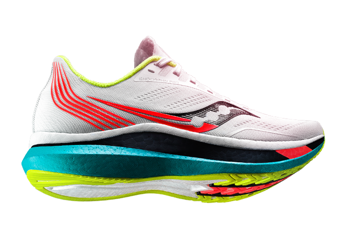

Saucony Endorphin Pro Features

Saucony’s lightest and springiest foam ever
Lightweight and breathable mesh
Efficient rocker shape
The Saucony Endorphin Pro 2 will also offer a strategically placed rubber outsole with some exposed midsole to cut down on weight and give runners every advantage necessary. The single-layered mesh upper is the only true update to the Endorphin Pro 2 and offers a better fit with some modified overlays offering a snug and race-ready fit for runners. Overall the Saucony Endorphin Pro 2 has what it takes to help runners toe the line with confidence.